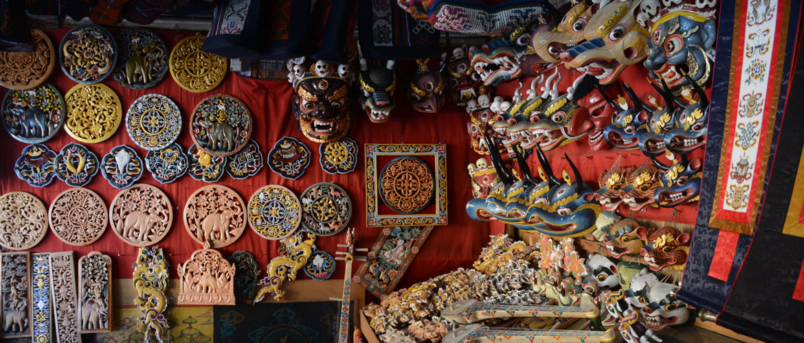
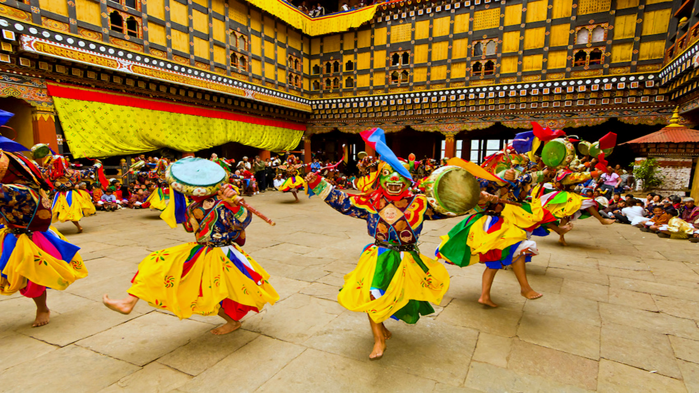
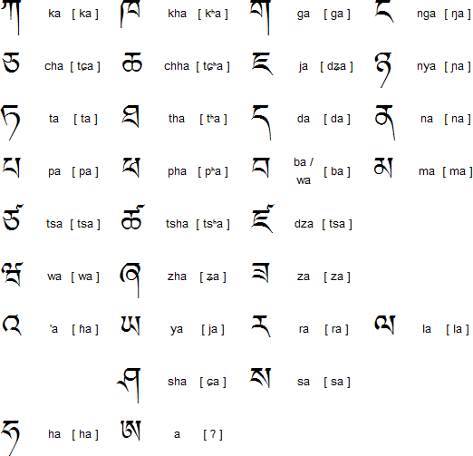

National Dress
The national dress of Bhutan is the Gho for men and the Kira for women. These garments are not only symbols of cultural pride but are also legally required to be worn in schools, government offices, and on formal occasions.

The national dress of Bhutan is the Gho for men and the Kira for women. These garments are not only symbols of cultural pride but are also legally required to be worn in schools, government offices, and on formal occasions.
Bhutanese cuisine is known for its simplicity and use of fresh, local ingredients. The national dish is Ema Datshi, a spicy mix of chilies and cheese. Rice, red rice in particular, is a staple, often served with vegetables and meat stews.

The Thirteen Traditional Arts of Bhutan (Zorig Chusum) include painting, sculpture, wood carving, weaving, and paper making. These crafts are taught in specialized schools and are an essential part of preserving Bhutan’s cultural identity.
Dance is an essential part of Bhutanese festivals and religious ceremonies. The famous masked dances performed during Tsechus are not only entertainment but also spiritual practices meant to bless onlookers, protect them from evil, and teach Buddhist values. Each movement and costume carries symbolic meaning.
Bhutanese music reflects the harmony between spirituality and daily life. Traditional instruments such as the dramyen (lute), lingm (flute), and zhungdra (long, traditional songs) are performed at religious and social events. Music often carries stories, teachings, and expressions of joy.

The national language of Bhutan is Dzongkha, though many regional dialects are spoken throughout the country. Language is a vital part of Bhutanese tradition, helping to preserve cultural heritage and connect communities across diverse regions.
